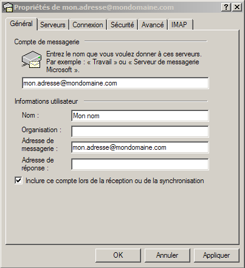

Configuration du client mail Outlook Express.Information de base de notre compte d'exemple :
Adresse email : "mon.adresse@mondomaine.com" Configuration d'Outlook Express : Exécutez Outlook Express. Une nouvelle fenêtre apparaît : Cliquez sur le bouton "Ajouter" puis sur "Courrier...". Une nouvelle fenêtre apparaît :
Lorsque l'on compose un email, l'adresse d'envoie se fait sous la forme : "Nom <adresse@email>". Pour passer à l'étape suivante il suffit de cliquer sur le bouton "Suivant >" situé en bas à droite. Une nouvelle fenêtre apparaît :
L'adresse email de notre exemple est "Mon nom <mon.adresse@mondomaine.com>". Pour passer à l'étape suivante il suffit de cliquer sur le bouton "Suivant >" situé en bas à droite. Une nouvelle fenêtre apparaît :
Il s'agit de la fenêtre de configuration pour le serveur de réception et d'envoi. Le serveur de réception utilisé est un serveur IMAP, il faut donc sélectionner "IMAP" pour le champ "Mon serveur de messagerie pour courrier entrant est un serveur". Dans notre exemple, le nom du serveur de réception est "mail.mondomaine.com". Le nom du serveur d'envoi de notre exemple est "mail.mondomaine.com, on définira donc pour le champ "Serveur de messagerie pour courrier sortant (SMTP) : la valeur "mail.mondomaine.com". Pour passer à l'étape suivante il suffit de cliquer sur le bouton "Suivant >" situé en bas à droite. Une nouvelle fenêtre apparaît :
Cette fenêtre permet de définir l'identifiant pour la connexion au serveur de réception et d'envoi. L'identifiant est le nom du mail utilisé, soit "mon.adresse@mondomaine.com". Pour passer à l'étape suivante il suffit de cliquer sur le bouton "Suivant >" situé en bas à droite. Une nouvelle fenêtre apparaît : Outlook Express va chercher à mettre à jour l'arborescence des dossiers du compte mail en se connectant au serveur de réception. Actuellement Outlook est maintenant configuré pour se connecter, sans crytage. Une nouvelle fenêtre apparaît :
Sélectionnez "mail.mondomaine.com" puis appuyez sur le bouton "Propriétés". Une nouvelle fenêtre apparaît :  Rennomer "mail.mondomaine.com" par "mon.adresse@mondomaine.com" afin que la racine de l'arbre du compte puisse porter ce nom. Cela facilite la gestion de plusieurs adresses emails. Allez dans l'onglet "Serveurs" :
Cochez "Mon serveur requiert une authentification". Allez dans l'onglet "Avancé" :
Cochez les deux cases "Ce serveur nécessite une connexion sécurisée (SSL)". Outlook Express est finalement configuré pour l'adresse email "Mon nom <mon.adresse@mondomaine.com>" et ce en connexion sécurisée. Cliquez sur le bouton "OK" sité en bas de la fenêtre de dialogue. Une nouvelle fenêtre apparaît :
Pour terminer, cliquez sur le bouton "Oui". |